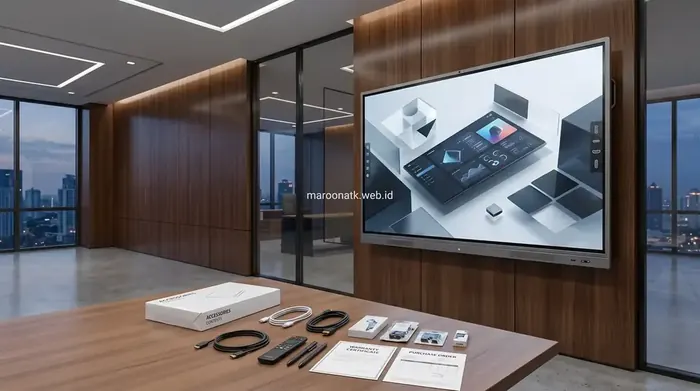
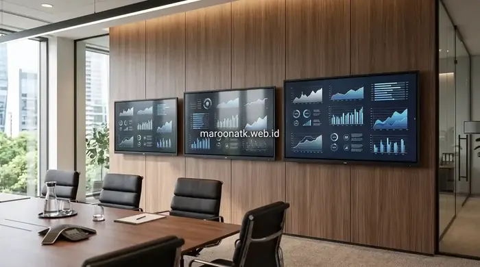

Faktor Utama yang Membentuk Harga Interactive Flat Panel Jakarta 2026
Harga interactive flat panel Jakarta ditentukan oleh ukuran panel 65, 75, atau 86 inci, resolusi layar 4K UHD 3840x2160, spesifikasi modul PC slot-in OPS Windows (Core i5/i7), fitur wireless screen mirroring, serta garansi resmi 1–3 tahun. Selain unit display, total biaya procurement mencakup aksesori mobile trolley bracket, instalasi onsite oleh teknisi bersertifikat, dan penerbitan e-Faktur PPN 11%.
Modernisasi ruang rapat direksi, ruang kelas interaktif (smart classroom), dan auditorium instansi pemerintah di wilayah DKI Jakarta semakin masif mengadopsi perangkat layar sentuh pintar atau Interactive Flat Panel (IFP). Menggantikan proyektor tradisional yang redup dan papan tulis manual, interactive flat panel Maroon ATK menghadirkan kolaborasi visual interaktif beresolusi tinggi yang terintegrasi langsung dengan platform video conference global seperti Zoom, Microsoft Teams, dan Google Meet.
Namun, dalam proses penyusunan Rencana Anggaran Biaya (RAB), tim purchasing sering mendapati rentang penawaran harga yang sangat bervariasi di pasaran. Perbedaan tersebut bukanlah sekadar selisih margin distributor, melainkan dipengaruhi secara mendasar oleh kombinasi spesifikasi panel optik, chipset pemrosesan, sistem operasi, serta kualitas dukungan purnajual yang disediakan oleh vendor resmi.

Maroon ATK: Vendor Interactive Flat Panel Indonesia Bergaransi Resmi
Tinjauan layanan pengadaan smart board resmi: legalitas PT, kelengkapan e-Faktur PPN 11%, dan garansi purnajual bersertifikasi.
Parameter Teknis Penentu Nilai Investasi Smart Interactive Board
Berikut adalah rincian aspek teknologi dan hardware yang mempengaruhi struktur biaya sebuah Interactive Flat Panel:
1. Ukuran Diagonal Layar (65", 75", dan 86" Inci)
Ukuran panel adalah komponen biaya terbesar. Pemilihan ukuran harus disesuaikan dengan dimensi ruangan dan jarak pandang audiens terjauh:
- 65 Inci: Cocok untuk ruang rapat kecil (huddle room) berkapasitas 4–8 orang atau ruang kelas privat dengan jarak pandang 2–4 meter.
- 75 Inci: Standar emas untuk ruang meeting korporat dan ruang kelas umum berkapasitas 10–20 orang dengan jarak pandang 4–7 meter.
- 86 Inci: Dirancang untuk ruang rapat eksekutif, boardroom, dan auditorium berkapasitas 25–50 orang dengan jarak pandang di atas 7 meter.
2. Resolusi Layar 4K UHD, Kecerahan, dan Anti-Glare Glass
Panel modern menggunakan resolusi 4K Ultra HD (3840 x 2160 piksel) dengan refresh rate 60Hz. Kaca pelindung wajib menggunakan Anti-Glare 7H Tempered Glass dengan teknologi Zero Bonding yang mengeliminasi celah udara antara kaca dan LCD, sehingga tulisan stylus terasa presisi tanpa efek paralaks serta bebas pantulan lampu ruangan.
3. Sistem Operasi Ganda (Android On-Board & Slot-in OPS Windows)
IFP kelas enterprise dilengkapi sistem operasi ganda. Sistem Android internal (misal Android 13/14) digunakan untuk fungsi whiteboard cepat dan presentasi nirkabel. Untuk kebutuhan software komputasi berat, ditambahkan modul OPS (Open Pluggable Specification) berbasis Intel Core i5/i7 berlisensi Windows resmi yang langsung diselipkan ke slot belakang bodi panel.
Matriks Komparasi Ukuran & Estimasi Faktor Harga Interactive Flat Panel
Berikut adalah tabel perbandingan teknis antar ukuran IFP beserta rekomendasi kapasitas ruang dan faktor biaya pengadaan:
| Ukuran IFP | Resolusi & Panel | Kebutuhan Ruang | Penggunaan Ideal | Faktor Penentu Harga |
|---|---|---|---|---|
| 65 Inci | 4K UHD (3840x2160), 40 Touch Point, Anti-Glare | 3 x 4 m hingga 4 x 5 m (4–8 Orang) | Huddle Room, Ruang Training Kecil, Kantor Startup | Paling ekonomis; variasi harga ditentukan oleh penambahan modul OPS dan bracket |
| 75 Inci | 4K UHD (3840x2160), Zero-Gap Optical Bonding | 5 x 7 m hingga 6 x 8 m (10–20 Orang) | Ruang Meeting Korporat, Smart Classroom Sekolah/Kampus | Kategori paling populer; dipengaruhi kualitas kamera 4K AI dan microphone array terpasang |
| 86 Inci | 4K UHD (3840x2160), Kecerahan 400–450 nits | 8 x 10 m ke atas (25–50+ Orang) | Boardroom Direksi, Aula, Command Center, Auditorium | Investasi premium; membutuhkan mobile trolley heavy-duty dan konfigurasi audio eksternal |
*Catatan: Estimasi dan kisaran harga di atas bersifat indikatif. Harga aktual dapat berubah berdasarkan merek unit, spesifikasi CPU modul OPS, kelengkapan aksesori mobile stand/bracket dinding, kuantitas volume order, serta paket layanan instalasi dan durasi garansi resmi.

Pemilihan dimensi layar interaktif yang proporsional dengan luas ruang rapat memastikan keterbacaan teks presentasi dan kenyamanan interaksi touchscreen di seluruh sudut ruangan.

Pengadaan Interactive Flat Panel Sekolah: Transformasi Smart Classroom
Panduan penerapan smart classroom berbasis IFP untuk institusi pendidikan dan sekolah internasional di Jakarta.
Konektivitas Canggih: USB-C Full Function dan Wireless Mirroring
Perangkat IFP modern dirancang untuk memangkas kerumitan kabel penghubung di meja rapat. Beberapa fitur konektivitas penting yang mempengaruhi efisiensi kerja antara lain:
- Port Type-C Full-Function: Memungkinkan transmisi sinyal video 4K, sinyal touch back, transfer data cepat, sekaligus pengisian daya laptop (Power Delivery hingga 65W) hanya dengan satu kabel tunggal.
- Wireless Screen Mirroring: Fitur berbagi layar nirkabel secara simultan hingga 4–9 perangkat (Windows, Mac, iOS, Android) tanpa instalasi aplikasi rumit.
- Audio & Kamera Bawaan: Sistem speaker stereo bertenaga 2x15W atau 2x20W dengan mikrofon 8-array berfitur Acoustic Echo Cancellation (AEC) dan kamera 4K auto-framing.

Mengenal Papan Tulis Digital Smart Board: Spesifikasi & Kelebihan
Eksplorasi teknologi layar sentuh interaktif untuk mendukung presentasi bisnis interaktif dan workshop modern.
Biaya Perangkat versus Biaya Instalasi dan Layanan Purnajual
Dalam pengadaan B2B, purchasing officer tidak boleh hanya membandingkan harga unit panel saja. Total anggaran proyek pengadaan IFP di Jakarta mencakup komponen pendukung:
- Braket Dinding vs Mobile Trolley Stand: Braket dinding fixed lebih hemat, sedangkan mobile stand hidrolik beroda memungkinkan perangkat dipindah antar ruang rapat.
- Jasa Pemasangan Profesional: Pemasangan dinding partisi gypsum memerlukan perkuatan rangka besi hollow di balik dinding untuk menahan bobot panel 40–70 kg.
- Training & Garansi SLA Onsite: Pastikan vendor menyediakan pelatihan penggunaan bagi staf IT serta garansi penggantian suku cadang 1–3 tahun dengan Service Level Agreement (SLA) jelas di wilayah Jabodetabek.
- Legalitas Perpajakan Resmi: Pastikan transaksi dilengkapi Surat Penawaran Harga (SPH) berkop PT dan e-Faktur PPN 11% untuk kepatuhan audit perusahaan.
Dapatkan Penawaran Harga Resmi Interactive Flat Panel di Jakarta
Layanan Demo Unit, SPH Resmi & Garansi Sparepart 3 Tahun
Konsultasikan kebutuhan smart display ruang rapat dan smart classroom Anda bersama tim spesialis teknologi Maroon ATK. Dapatkan proposal penawaran harga resmi B2B hari ini.
Kesimpulan: Investasi Cerdas pada Interactive Flat Panel yang Tepat Guna
Rangkuman Keputusan Procurement
Menentukan pilihan Interactive Flat Panel memerlukan kecermatan memadukan luas ruangan, kebutuhan komputasi software, dan akuntabilitas vendor.
- Sesuaikan Ukuran Layar: Gunakan 65" untuk huddle room, 75" untuk meeting room korporat standar, dan 86" untuk ruang eksekutif/auditorium.
- Pertimbangkan Modul OPS: Tambahkan mini PC OPS jika perusahaan sering menjalankan presentasi software Windows mandiri tanpa laptop eksternal.
- Pilih Vendor Resmi PT: Percayakan pengadaan kepada Maroon ATK yang menjamin ketersediaan unit demo, teknisi instalasi internal, e-Faktur PPN 11%, dan garansi purnajual terpercaya.
Pertanyaan Umum (FAQ) Harga Interactive Flat Panel
Kisaran harga indikatif Interactive Flat Panel di pasar Jakarta bervariasi antara Rp 30 jutaan untuk ukuran 65 inci standalone hingga Rp 80 jutaan ke atas untuk ukuran 86 inci dengan modul PC OPS Windows i7, kamera 4K tracking, dan mobile trolley stand. Harga aktual sangat bergantung pada spesifikasi teknis, jumlah unit, dan paket after-sales.
Modul OPS (Open Pluggable Specification) adalah mini PC internal berstandar industri dengan prosesor Intel Core i5/i7, RAM 8–16GB, dan SSD berlisensi Windows resmi yang disematkan ke bodi panel. Modul ini memungkinkan IFP menjalankan software korporat, video conference zoom/teams beresolusi tinggi, dan aplikasi CAD tanpa perlu kabel laptop eksternal.
Ya, Maroon ATK menyediakan layanan demo unit fisik di kantor klien atau showroom kami, survey kelayakan dinding, instalasi bracket/trolley oleh teknisi internal, pelatihan operator (training session), penerbitan e-Faktur PPN 11%, serta garansi resmi sparepart 1 hingga 3 tahun.

Arby Ardiansyah
Praktisi pengadaan B2B berpengalaman lebih dari 5 tahun dalam teknologi smart display perkantoran, sistem audio-visual ruang rapat modern, dan e-procurement instansi korporat di Indonesia.